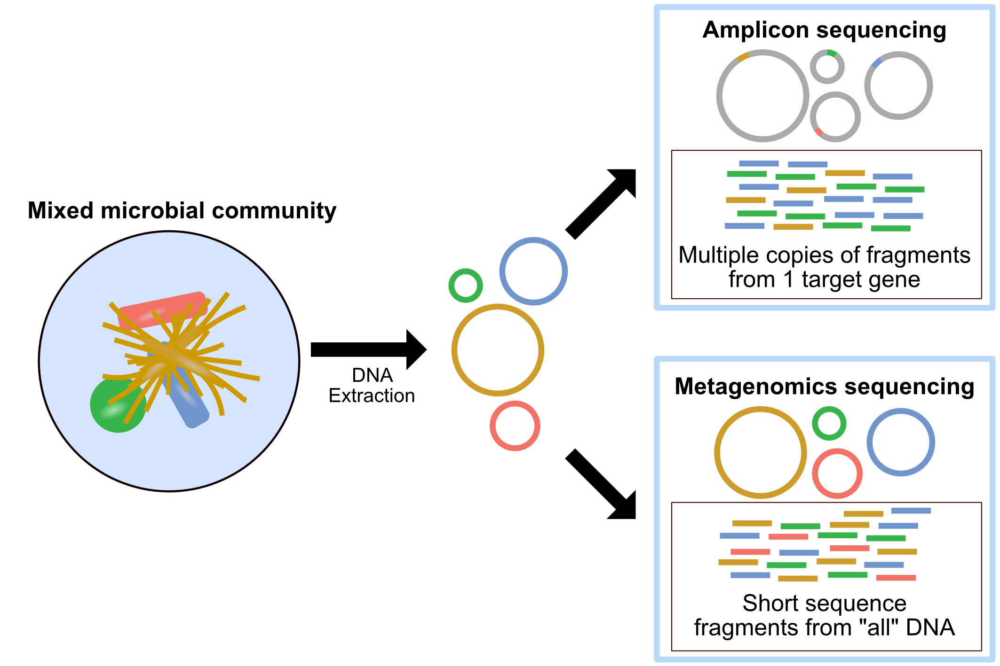
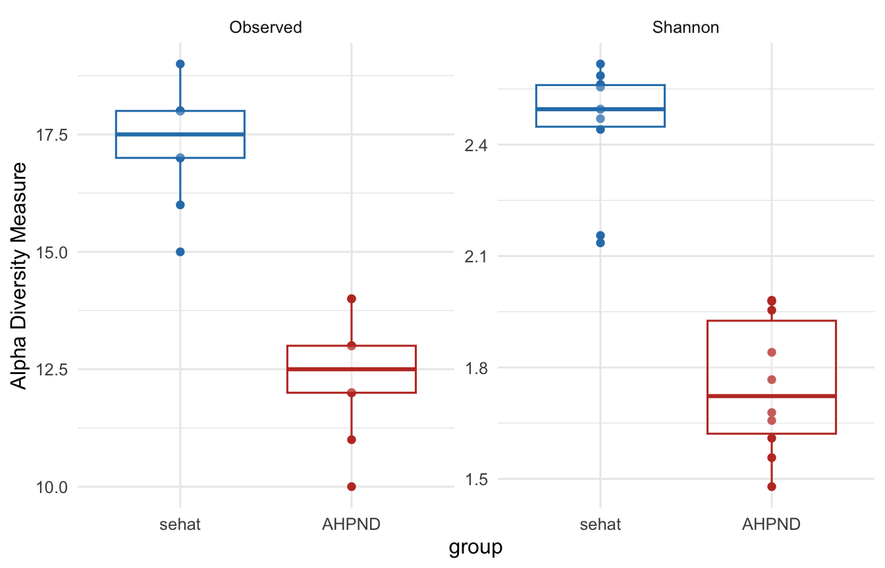
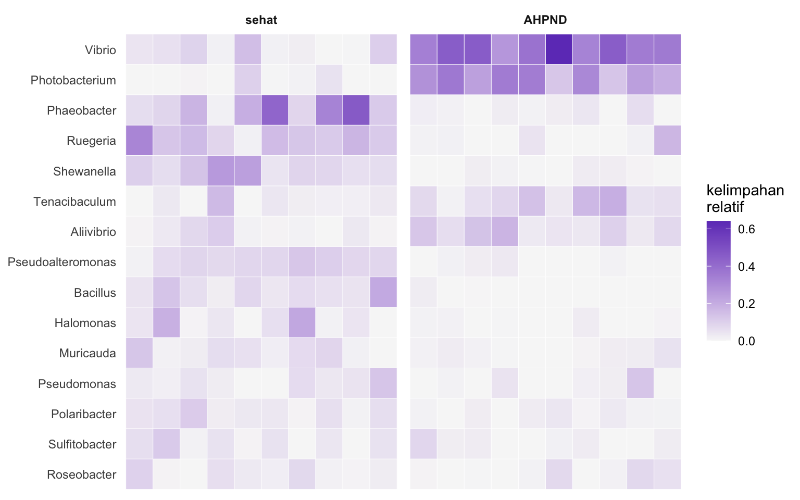

Udang vanamei (Litopenaeus vannamei) pada sistem budidaya intensif. Gambar atas dan bawah masing-masing adalah udang sehat dan yang terinfeksi AHPND. Sumber gambarGlobal Seafood Alliance.
Di setiap sel bakteri terdapat subunit ribosom kecil yang mengandung molekul RNA berukuran sekitar 1.500 pasang basa, yang dikenal sebagai 16S rRNA. Gen yang mengkodenya sangat istimewa karena strukturnya tersusun dari daerah-daerah lestari (conserved) yang sangat terjaga di seluruh kehidupan prokariot dan diapit oleh sembilan daerah hipervariabel bernama V1 hingga V9. Daerah lestari berfungsi sebagai dermaga bagi primer PCR yang mampu menempel hampir di semua bakteri, sementara daerah hipervariabel bertindak seperti sidik jari khas tiap takson. Pada tutorial ini kita menargetkan wilayah V3 dan V4 karena kombinasinya memberikan resolusi taksonomi yang baik hingga tingkat genus sekaligus menghasilkan amplikon sepanjang sekitar 460 pasang basa, panjang yang ideal untuk sequencing paired-end Illumina. Khusus pada data demo tutorial ini, panjang amplikon sengaja disederhanakan menjadi 400 bp agar ringan dijalankan.

Gambaran umum alur kerja metagenomik, mulai dari pengambilan sampel dan ekstraksi DNA, amplifikasi serta sequencing, hingga analisis komunitas mikroba secara komputasional.
Alur kerja metabarcoding 16S dimulai dari pengambilan sampel dan ekstraksi DNA total, lalu amplifikasi daerah V3 dan V4 dengan PCR memakai primer universal. Amplikon yang dihasilkan kemudian di-sequencing secara massal. Setelah melewati tahap kendali mutu dan pemotongan primer, reads yang tersisa dikelompokkan menjadi satuan biologis bernama ASV (Amplicon Sequence Variant) atau OTU (Operational Taxonomic Unit). ASV yang dihasilkan oleh metode denoising seperti DADA2 merupakan satuan beresolusi tinggi karena mewakili urutan biologis yang tepat tanpa ambiguitas clustering. Setiap ASV lalu dibandingkan dengan basis data referensi seperti SILVA untuk memperoleh identitas taksonominya.
Metabarcoding 16S dibandingkan sekuensing shotgun
Dua pendekatan utama dalam metagenomik memiliki profil kelebihan dan kekurangan yang berbeda. Pendekatan metabarcoding amplikon 16S berbiaya rendah, hanya membutuhkan sedikit reads karena 10.000 sampai 50.000 reads per sampel sudah informatif, dan memberikan resolusi taksonomi hingga tingkat genus atau kadang species untuk bakteri serta archaea, walaupun tidak mampu mendeteksi virus, fungi, maupun jalur metabolik secara langsung. Sebaliknya, shotgun metagenomics berbiaya lebih tinggi dan membutuhkan jutaan reads per sampel, namun mampu memberikan resolusi hingga tingkat species atau strain sekaligus mengungkap potensi fungsional berupa gen dan pathway metabolik, dan mencakup seluruh domain kehidupan termasuk virus dan fungi.
Untuk studi komunitas bakteri dalam konteks kesehatan organisme budidaya, pendekatan amplikon 16S umumnya menjadi pilihan pertama karena efisiensi biaya dan kemampuannya menangani banyak sampel dalam satu run sekuensing.
Relevansi untuk akuakultur
Sistem budidaya intensif menciptakan tekanan biologis yang tidak sederhana sehingga kesehatan hewan budidaya tidak hanya bergantung pada genotipe inang atau kualitas air, tetapi juga pada ekosistem mikroba di dalam dan sekitarnya. Mikrobioma usus udang dan ikan berperan aktif dalam pencernaan nutrisi, stimulasi sistem imun mukosa, serta produksi metabolit antimikroba yang menekan pertumbuhan patogen. Di tambak, komunitas mikroba air dan sedimen membentuk sabuk pengaman ekologis yang memengaruhi ketersediaan nutrisi sekaligus laju proliferasi bakteri oportunistik.
Ketika terjadi disbiosis, yaitu ketidakseimbangan komposisi komunitas mikroba, sistem pertahanan ini melemah dan pintu terbuka bagi infeksi. Pada penyakit seperti Vibriosis, Early Mortality Syndrome (EMS), maupun AHPND, pergeseran dramatis komposisi mikrobioma usus sering mendahului tanda-tanda klinis yang terlihat. Hal inilah yang menjadikan metagenomik 16S sebagai alat yang sangat berharga karena kemampuannya mendeteksi perubahan komposisi komunitas mikroba dengan cepat dan biaya terjangkau membuka peluang untuk deteksi dini patogen, pemilihan kandidat probiotik yang tepat, serta evaluasi dampak perubahan manajemen pakan atau kualitas air terhadap kesehatan usus secara menyeluruh.
Desain studi dan data
Skenario mikrobioma usus udang vanamei sehat dan AHPND
Tutorial ini menggunakan skenario yang dirancang untuk melengkapi studi transkriptomik yang sudah dibahas pada RNA-Seq workflow. Di sana kita menelusuri respon ekspresi gen hepatopankreas udang vanamei (Litopenaeus vannamei) saat terinfeksi toksin Pir A/B dari Vibrio penyebab AHPND. Kini kita mendekati sistem yang sama dari sudut pandang berbeda, bukan ekspresi gen inang melainkan komunitas mikroba yang menghuni usus udang tersebut.
Dataset tutorial ini terdiri dari 20 sampel usus udang vanamei, yaitu 10 sampel dari udang sehat tanpa tanda klinis dan 10 sampel dari udang yang terdiagnosis AHPND berdasarkan histopatologi hepatopankreas. DNA total diekstraksi dari isi usus memakai protokol bead-beating standar, kemudian daerah V3 dan V4 dari gen 16S rRNA diamplifikasi memakai pasangan primer 341F (5'-CCTACGGGNGGCWGCAG-3') dan 805R (5'-GACTACHVGGGTATCTAATCC-3'). Produk amplikon lalu di-sequencing dengan platform Illumina MiSeq memakai paired-end 2×300 bp.
Perbandingan dua kondisi ini memungkinkan kita menjawab beberapa pertanyaan penting. Apakah ada perbedaan komposisi genus bakteri antara udang sehat dan yang terinfeksi, apakah terjadi disbiosis misalnya penurunan Lactobacillales atau peningkatan Vibrionaceae, serta seberapa beragam komunitas mikroba dalam masing-masing kelompok. Semua pertanyaan ini akan kita jawab secara kuantitatif memakai analisis alpha diversity, beta diversity, dan perbandingan komposisi taksonomi.
Semua data pada tutorial ini adalah data demo untuk pembelajaran yang dibuat dengan skrip code/generate-16s-demo.R agar seluruh pipeline dapat dijalankan langsung dan tetap ringan di komputer biasa. Perlu diingat bahwa data nyata umumnya jauh lebih besar, terdiri atas puluhan ribu hingga jutaan reads per sampel, sehingga menuntut sumber daya komputasi yang besar serta basis data taksonomi penuh seperti SILVA atau GTDB. Semua genus pada data demo ini sengaja dipilih dari kelompok bakteri laut dan payau yang lazim dijumpai di lingkungan tambak serta saluran pencernaan udang vanamei, sehingga tidak ada genus khas air tawar. Silakan unduh berkas berikut dengan menekan tombol unduh, lalu berkas akan tersimpan di komputer Anda.
Sebelum memulai analisis, kita lihat dulu struktur dan jumlah reads yang kita miliki. Langkah ini penting untuk memastikan semua berkas terbaca dengan benar dan jumlah reads per sampel berada dalam rentang yang wajar. Kita juga perlu memverifikasi bahwa penamaan berkas konsisten sehingga DADA2 dapat mencocokkan pasangan forward dan reverse dengan tepat. Paket ShortRead memungkinkan kita membaca langsung metadata dari berkas FASTQ terkompresi tanpa perlu mengekstraknya lebih dulu sehingga inspeksi awal ini berjalan efisien bahkan untuk dataset besar.
Tabel di atas memperlihatkan nama sampel beserta jumlah reads yang berhasil dibaca dari masing-masing berkas. Setiap sampel berisi sekitar dua ribu pasang reads, jumlah yang sengaja dibuat kecil untuk demo namun cukup untuk menggambarkan seluruh alur. Pada data nyata, jumlah ini biasanya berada pada kisaran puluhan ribu reads per sampel. Penjelasan lebih dalam tentang format berkas yang kita pakai dapat Anda baca pada artikel Mengenal berbagai format file NGS.
Kendali mutu dan pemangkasan primer
Setiap amplikon yang kita sekuensing mengandung urutan primer PCR di ujung-ujungnya, yaitu 341F sepanjang 17 nt di awal forward read dan 805R sepanjang 21 nt di awal reverse read. Urutan primer ini bukan bagian dari sekuens biologis bakteri sehingga harus dibuang sebelum analisis lebih lanjut. Jika dibiarkan, urutan primer akan memperkenalkan artefak pada tahap error learning dan denoising DADA2 yang berpotensi menghasilkan ASV palsu.
Alat standar untuk pemangkasan primer dalam pipeline produksi adalah cutadapt. Blok berikut menampilkan contoh perintah cutadapt sebagai referensi yang tidak dijalankan di sini. Sebagai gantinya kita memakai parameter trimLeft dalam fungsi filterAndTrim dari DADA2 yang memangkas sejumlah basa tetap dari ujung kiri setiap read, pendekatan yang setara dan lebih praktis untuk dataset dengan panjang primer seragam.
# referensi (tidak dijalankan di sini): pemangkasan primer dengan cutadaptcutadapt-g CCTACGGGAGGCAGCAG -G GACTACCAGGGTATCTAATCC \-o trimmed_1.fastq.gz -p trimmed_2.fastq.gz sample_1.fastq.gz sample_2.fastq.gz
Pada perintah cutadapt di atas, kode degenerasi IUPAC pada primer asli yaitu N, W, H, dan V ditulis dalam salah satu bentuk resolusinya agar contoh tetap sederhana. Pada praktik nyata Anda memberi cutadapt urutan primer lengkap beserta kode degenerasinya. Selain membuang primer, filterAndTrim juga menerapkan filter kualitas berupa batas maximum expected errors (maxEE) sebesar 2 untuk forward dan reverse, serta pemotongan basa berskor kualitas di bawah Q2 lewat parameter truncQ. Semua reads yang gagal melewati filter tidak diteruskan ke tahap berikutnya.
Kolom reads.in menunjukkan jumlah reads awal dan reads.out jumlah yang lolos filter. Pada dataset ini sekitar 23 persen reads tersaring keluar karena sebagian sengaja dibuat berkualitas rendah pada ujung 3’, persis seperti yang sering kita jumpai pada data Illumina nyata. Penurunan sebesar ini tergolong wajar dan menandakan tahap kendali mutu memang bekerja menyaring reads bermutu buruk sebelum denoising. Bila Anda melihat penurunan yang sangat ekstrem, misalnya lebih dari separuh reads hilang, itu pertanda parameter filter terlalu ketat atau mutu sekuensing memang bermasalah.
Denoising menjadi ASV dengan DADA2
Denoising adalah proses membedakan varian sekuens biologis yang nyata dari noise sekuensing. Berbeda dengan pendekatan klasik berbasis clustering OTU yang mengelompokkan sekuens dengan kemiripan minimal 97 persen, DADA2 memakai model error probabilistik yang dipelajari langsung dari data untuk menghasilkan ASV, yaitu satuan beresolusi nukleotida tunggal yang merepresentasikan sekuens biologis sesungguhnya.
Proses ini berlangsung dalam empat tahap utama. Pertama, learnErrors membangun model error khas dataset dari sebagian reads. Kedua, dada menerapkan model tersebut untuk mendekomposisi reads menjadi ASV. Ketiga, mergePairs menggabungkan forward dan reverse read memakai daerah overlap yang berukuran sekitar 30 bp pada desain V3 dan V4 ini. Keempat, removeBimeraDenovo menghapus artefak bimera berupa kontaminasi silang amplikon. Hasil akhirnya adalah tabel ASV bersih yang siap untuk penugasan taksonomi.
Keluaran di atas memberi tahu kita bahwa denoising memulihkan sekitar 20 ASV dengan panjang seragam 400 bp, persis sebanyak genus yang kita masukkan ke dalam data demo. Keseragaman panjang ini menandakan penggabungan pasangan berlangsung sempurna pada daerah overlap yang kita rancang. Pada data nyata Anda biasanya memperoleh ratusan hingga ribuan ASV, dan penyebaran panjang yang lebar bisa menjadi sinyal adanya artefak yang perlu disaring lebih lanjut.
Tabel pelacakan ini merangkum berapa banyak reads yang bertahan di setiap tahap pipeline, mulai dari input mentah, setelah pemfilteran, denoising forward dan reverse, penggabungan pasangan, sampai penghapusan bimera. Membaca tabel ini dari kiri ke kanan membantu kita menemukan tahap mana yang membuang reads paling banyak. Pada dataset ini sebagian besar reads yang lolos filter berhasil melewati seluruh tahap berikutnya, sehingga pola penurunannya landai dan sehat. Penurunan drastis pada satu tahap, misalnya penggabungan pasangan yang gagal massal, biasanya menunjuk pada masalah panjang overlap atau pemotongan yang keliru.
Penugasan taksonomi
Setelah memperoleh sekuens ASV yang bersih, langkah terakhir pada tahap upstream adalah mengidentifikasi asal usul taksonomi setiap ASV. DADA2 memakai pengklasifikasi naive Bayes yang membandingkan k-mer dari sekuens ASV kita dengan basis data referensi terformat. Parameter minBoot, yaitu nilai bootstrap minimum, mengontrol tingkat kepercayaan penugasan sehingga nilai yang lebih tinggi menghasilkan penugasan yang lebih konservatif.
Dalam tutorial ini kita memakai basis data demo yang hanya mencakup beberapa genus bakteri yang dimasukkan ke dalam data demo. Pada analisis nyata Anda akan memakai basis data lengkap seperti SILVA versi 138 ke atas, GTDB, atau RDP yang mencakup puluhan ribu sekuens referensi dan dapat diunduh dari situs resmi DADA2. Basis data yang lebih lengkap meningkatkan cakupan taksonomi tetapi juga menuntut lebih banyak RAM selama proses penugasan.
Tabel taksonomi di atas memetakan setiap ASV ke peringkat Kingdom sampai Genus. Kita melihat genus yang relevan dengan kesehatan udang muncul dengan jelas, antara lain Vibrio dan Photobacterium dari famili Vibrionaceae yang kerap berasosiasi dengan AHPND. Pada data nyata sebagian ASV biasanya tidak teridentifikasi sampai tingkat genus dan akan terisi NA, terutama untuk takson yang belum terwakili baik di basis data referensi.
Membangun objek phyloseq
Setelah proses upstream DADA2 selesai dan kita memiliki tabel ASV seqtab.nochim beserta anotasi taksonomi taxa, langkah berikutnya adalah menyatukan semua informasi, yaitu tabel hitungan, metadata sampel, dan taksonomi, ke dalam satu objek terpadu memakai paket phyloseq. Objek phyloseq memudahkan manipulasi data sekaligus menjadi fondasi untuk seluruh analisis komunitas berikutnya. Kita juga menyimpan sekuens ASV asli sebagai objek DNAStringSet di dalamnya, berguna bila nanti ingin membangun pohon filogenetik, lalu mengganti nama ASV panjang menjadi label pendek seperti ASV1 dan ASV2 agar keluaran lebih mudah dibaca.
Ringkasan objek menunjukkan struktur data yang kini rapi, yaitu sekitar 20 takson lintas 20 sampel lengkap dengan tabel taksonomi enam peringkat dan sekuens rujukannya. Satu objek ini menggantikan banyak tabel terpisah sehingga setiap analisis berikutnya cukup memanggil ps tanpa khawatir nama sampel atau urutan baris tertukar.
Analisis komunitas mikroba
Dengan objek phyloseq yang sudah terbentuk, kita siap menjalankan serangkaian analisis ekologi mikroba. Analisis ini mencakup enam pendekatan utama, yaitu alpha diversity untuk kekayaan dan keseragaman dalam satu sampel, kurva rarefaction untuk kecukupan kedalaman sequencing, komposisi taksonomi untuk melihat siapa yang ada dan seberapa banyak, beta diversity untuk perbedaan struktur komunitas antar sampel, heatmap kelimpahan untuk pola taksa teratas, dan kelimpahan diferensial untuk taksa yang berbeda secara statistik antar kelompok. Bersama-sama, keenam analisis ini memberikan gambaran menyeluruh tentang perubahan ekologi mikroba pada udang AHPND dibandingkan udang sehat.
Alpha diversity, keragaman dalam sampel
Alpha diversity mengukur kekayaan dan keseragaman komunitas mikroba di dalam satu sampel. Indeks Observed menghitung jumlah ASV unik, sedangkan indeks Shannon turut mempertimbangkan kelimpahan relatif setiap ASV sehingga lebih peka terhadap taksa yang jarang. Kita berharap sampel AHPND menampilkan keragaman lebih rendah karena infeksi patogen cenderung mengganggu komunitas normal dan mendorong dominasi satu atau beberapa taksa oportunistik.
plot_richness(ps, x ="group", color ="group",measures =c("Observed","Shannon")) +geom_boxplot(alpha =0.25, outlier.shape =NA) +scale_color_manual(values =c(sehat ="#2c7fb8", AHPND ="#c0392b")) +theme_minimal(base_size =12) +theme(legend.position ="none")

Gambar 1: Alpha diversity berupa indeks Observed dan Shannon per kelompok. Udang AHPND diharapkan memiliki keragaman lebih rendah.
Pada kedua indeks, kotak kelompok AHPND yang berwarna merah berada lebih rendah daripada kelompok sehat yang berwarna biru. Artinya, komunitas mikroba udang terinfeksi tidak hanya memuat lebih sedikit jenis ASV, tetapi juga lebih timpang karena didominasi sedikit takson. Pola ini sejalan dengan konsep disbiosis, di mana hilangnya keragaman menjadi penanda awal terganggunya keseimbangan ekosistem usus.
Untuk menguji apakah perbedaan alpha diversity antar kelompok signifikan secara statistik, kita memakai uji Wilcoxon rank-sum yang bersifat non parametrik karena data keragaman sering tidak terdistribusi normal, terutama pada ukuran sampel kecil.
rich <-estimate_richness(ps, measures =c("Observed","Shannon"))rich$group <-sample_data(ps)$groupwilcox.test(Shannon ~ group, data = rich)
Wilcoxon rank sum exact test
data: Shannon by group
W = 100, p-value = 1.083e-05
alternative hypothesis: true location shift is not equal to 0
Uji ini menghasilkan p-value yang jauh lebih kecil dari ambang 0,05, yang berarti perbedaan keragaman Shannon antara udang sehat dan AHPND sangat kecil kemungkinannya terjadi secara kebetulan. Dengan kata lain, penurunan keragaman pada udang terinfeksi bukan sekadar pola visual pada boxplot, melainkan perbedaan yang didukung bukti statistik yang kuat.
Kurva rarefaction
Kurva rarefaction menggambarkan hubungan antara jumlah reads yang di-subsample dan jumlah ASV yang ditemukan. Kurva yang mendatar menandakan kedalaman sequencing sudah memadai karena menambah reads tidak banyak lagi memunculkan ASV baru. Sebaliknya, kurva yang masih menanjak tajam menunjukkan masih banyak keragaman yang belum tertangkap.
Gambar 2: Kurva rarefaction yang memetakan kekayaan ASV terhadap kedalaman sampling. Kurva mendatar menandakan kedalaman sudah memadai.
Semua kurva mendatar jauh sebelum mencapai kedalaman maksimum, sehingga kita yakin jumlah reads per sampel sudah cukup untuk menangkap kekayaan ASV yang ada. Perhatikan pula bahwa garis merah milik kelompok AHPND mendatar pada jumlah ASV yang lebih rendah daripada garis biru, sebuah penegasan visual atas temuan alpha diversity sebelumnya bahwa komunitas udang terinfeksi memang lebih miskin jenis.
Komposisi taksonomi
Visualisasi komposisi taksonomi memperlihatkan siapa saja yang ada dalam komunitas dan berapa banyak secara relatif. Kita mengagregasi ASV ke tingkat Genus dengan tax_glom agar lebih mudah ditafsirkan, lalu mengubah hitungan menjadi kelimpahan relatif. Pada kasus AHPND, dominasi Vibrio atau Photobacterium diharapkan tampak mencolok pada kelompok terinfeksi.
ps_genus <-tax_glom(ps, taxrank ="Genus", NArm =FALSE)ps_rel <-transform_sample_counts(ps_genus, function(x) x /sum(x))plot_bar(ps_rel, x ="Sample", fill ="Genus") +facet_wrap(~ group, scales ="free_x", nrow =1) +labs(x =NULL, y ="kelimpahan relatif") +theme_minimal(base_size =11) +theme(axis.text.x =element_text(angle =90, vjust =0.5, size =6),legend.key.size =unit(0.35, "cm"), legend.text =element_text(size =7))
Gambar 3: Komposisi genus berupa kelimpahan relatif per sampel yang dipisah menurut kelompok. Dominasi Vibrio dan Photobacterium diharapkan menonjol pada AHPND.
Perbedaan antara dua panel sangat kontras. Sampel sehat di panel kiri menampilkan komposisi yang relatif merata dengan banyak genus komensal laut seperti Bacillus, Phaeobacter, dan Ruegeria hadir berdampingan. Sebaliknya, sampel AHPND di panel kanan didominasi oleh blok besar Vibrio dan Photobacterium yang menggusur sebagian besar takson lain. Pergeseran komposisi inilah wujud konkret disbiosis yang sebelumnya hanya kita lihat sebagai angka pada indeks keragaman.
Beta diversity, keragaman antar sampel
Beta diversity mengukur perbedaan komposisi komunitas antar sampel. Kita memakai jarak Bray-Curtis yang mempertimbangkan kelimpahan relatif, lalu memvisualisasikannya dengan PCoA (Principal Coordinates Analysis). Pemisahan yang jelas antara kelompok sehat dan AHPND pada plot ordinasi menandakan infeksi mengubah struktur komunitas mikroba secara mendasar. Agar kontras antar kelompok mudah dibaca, titik sampel sehat digambar sebagai lingkaran biru dan AHPND sebagai segitiga merah.
Gambar 4: Ordinasi PCoA berbasis jarak Bray-Curtis pada kelimpahan relatif. Lingkaran biru adalah udang sehat dan segitiga merah adalah udang AHPND.
Kedua kelompok membentuk gerombol yang terpisah jelas pada ruang ordinasi, dengan elips kepercayaan yang nyaris tidak bertumpang tindih. Jarak antar gerombol ini menandakan komunitas mikroba udang sehat dan udang AHPND berbeda secara menyeluruh, bukan sekadar berbeda pada satu atau dua takson. Sumbu pertama yang memisahkan keduanya biasanya menampung porsi terbesar variasi komposisi.
Untuk menguji apakah pemisahan ini signifikan secara statistik, kita memakai PERMANOVA lewat fungsi adonis2 dari paket vegan. PERMANOVA adalah uji permutasi multivariat yang tangguh dan tidak mengasumsikan distribusi normal data.
bc <- phyloseq::distance(ps_relA, method ="bray")adonis2(bc ~ group, data =data.frame(sample_data(ps_relA)))
Permutation test for adonis under reduced model
Permutation: free
Number of permutations: 999
adonis2(formula = bc ~ group, data = data.frame(sample_data(ps_relA)))
Df SumOfSqs R2 F Pr(>F)
Model 1 2.2275 0.60938 28.08 0.001 ***
Residual 18 1.4279 0.39062
Total 19 3.6554 1.00000
---
Signif. codes: 0 '***' 0.001 '**' 0.01 '*' 0.05 '.' 0.1 ' ' 1
Hasil PERMANOVA mengkonfirmasi kesan visual tadi. Nilai R2 yang berada di kisaran 0,6 berarti lebih dari separuh atau sekitar 60 persen total variasi struktur komunitas dapat dijelaskan hanya oleh status infeksi, sebuah efek yang sangat besar untuk data biologis. Nilai p sebesar 0,001 yang merupakan nilai terkecil yang dapat dicapai dengan jumlah permutasi default menegaskan bahwa pemisahan antara sehat dan AHPND hampir pasti bukan kebetulan.
Heatmap kelimpahan
Heatmap memberi gambaran visual yang intuitif tentang pola kelimpahan relatif di seluruh sampel sekaligus. Kita memusatkan perhatian pada 15 genus teratas berdasarkan total kelimpahan, lalu melakukan clustering hierarki pada baris yang mewakili taksa dan kolom yang mewakili sampel agar pola berulang lebih mudah dikenali. Anotasi warna pada kolom membantu membedakan kelompok sehat dan AHPND.
suppressMessages(library(tidyr))top <-names(sort(taxa_sums(ps_genus), decreasing =TRUE))[1:15]ps_top <-transform_sample_counts(prune_taxa(top, ps_genus), function(x) x /sum(x))mat <-as(otu_table(ps_top), "matrix"); if (!taxa_are_rows(ps_top)) mat <-t(mat)rownames(mat) <-as.character(tax_table(ps_top)[rownames(mat), "Genus"])grp <-as.character(sample_data(ps_top)$group); names(grp) <-sample_names(ps_top)long <-as.data.frame(as.table(mat))colnames(long) <-c("Genus", "Sample", "abundance")long$group <-factor(grp[as.character(long$Sample)], levels =c("sehat","AHPND"))long$Genus <-factor(long$Genus, levels =names(sort(rowSums(mat))))ggplot(long, aes(Sample, Genus, fill = abundance)) +geom_tile(color ="white", linewidth =0.15) +facet_grid(~ group, scales ="free_x", space ="free_x") +scale_fill_gradient(low ="#f7f7f7", high ="#6f42c1", name ="kelimpahan\nrelatif") +labs(x =NULL, y =NULL) +theme_minimal(base_size =11) +theme(axis.text.x =element_blank(), axis.ticks.x =element_blank(),panel.grid =element_blank(), strip.text =element_text(face ="bold"))

Gambar 5: Heatmap kelimpahan relatif 15 genus teratas. Sampel dikelompokkan menjadi panel sehat dan AHPND, dan genus diurutkan menurut total kelimpahan.
Kedua panel memisahkan sampel sehat dan AHPND sehingga pola antar kelompok mudah dibandingkan secara langsung. Pada panel AHPND, baris Vibrio dan Photobacterium menyala dengan warna pekat yang menandakan kelimpahan tinggi, sedangkan pada panel sehat warna pekat justru jatuh pada genus komensal laut seperti Phaeobacter dan Ruegeria. Pembacaan baris demi baris seperti ini memudahkan kita menebak takson mana yang menjadi penanda tiap kondisi.
Kelimpahan diferensial dengan DESeq2
Analisis kelimpahan diferensial bertujuan mengidentifikasi taksa yang secara statistik lebih tinggi atau lebih rendah antara dua kondisi. Di sini kita memakai DESeq2 yang semula dirancang untuk RNA-seq namun terbukti efektif untuk data mikrobioma berkat kemampuannya menangani overdispersion dan jumlah nol yang banyak. Normalisasi dilakukan dengan geometric mean untuk mengatasi kelimpahan nol pada sebagian taksa.
Sebagai alternatif yang dirancang khusus untuk data komposisional, ANCOM-BC (Analysis of Compositions of Microbiomes with Bias Correction) lebih tepat secara statistik karena secara eksplisit memodelkan sifat komposisional data mikrobioma. Meski begitu, DESeq2 dengan normalisasi geometric mean tetap menjadi pilihan yang umum dan mudah ditafsirkan dalam praktik.
Gambar 6: Genus dengan kelimpahan berbeda signifikan pada padj di bawah 0,05 antara AHPND dan sehat menurut DESeq2. Nilai positif berarti lebih tinggi pada AHPND.
Grafik ini merangkum cerita seluruh analisis dalam satu pandangan. Batang merah yang menjulur ke kanan adalah genus yang melonjak signifikan pada udang AHPND, dipimpin oleh Vibrio dan Photobacterium, persis patogen yang berasosiasi dengan penyakit ini. Batang biru yang menjulur ke kiri adalah genus komensal yang justru tertekan saat infeksi. Nilai log2 fold change sebesar satu berarti kelimpahan berlipat dua, sehingga batang yang sangat panjang menggambarkan perubahan kelimpahan yang berlipat banyak. Inilah daftar kandidat penanda hayati yang paling layak ditindaklanjuti pada studi lanjutan.
Apa yang perlu dipertimbangkan
Kualitas dan interpretasi studi metagenomik 16S sangat bergantung pada keputusan yang diambil jauh sebelum analisis bioinformatika dimulai. Berikut beberapa hal penting yang perlu dipertimbangkan.
Pilihan region dan primer. Region V3 dan V4 memberikan resolusi taksonomi yang baik untuk sebagian besar bakteri, tetapi bias cakupannya berbeda dari V4 saja atau kombinasi lain. Primer tertentu dapat melewatkan takson tertentu, misalnya primer universal standar kurang efisien mendeteksi Archaea atau beberapa filum bakteri yang jarang. Pilihan primer sebaiknya disesuaikan dengan kelompok organisme target dan tujuan studi.
Bias jumlah salinan gen 16S. Jumlah salinan gen 16S rRNA berbeda antar spesies, mulai dari satu salinan pada beberapa Archaea hingga belasan salinan pada beberapa bakteri umum. Akibatnya, kelimpahan relatif yang diperoleh dari data amplikon tidak sama dengan kelimpahan sel sebenarnya dalam sampel. Koreksi jumlah salinan, misalnya memakai basis data rrnDB, dapat mengurangi bias ini walaupun tidak menghilangkannya sepenuhnya.
Kontrol negatif dan kontaminasi.Reagent dan kit ekstraksi DNA mengandung komunitas bakteri latar belakang yang rendah namun nyata, yang dapat mendominasi sinyal pada sampel berbiomassa rendah seperti usus larva atau jaringan steril. Selalu sertakan kontrol negatif berupa blanko ekstraksi dan blanko PCR di setiap batch pemrosesan, lalu analisis komunitasnya bersama sampel utama untuk mengenali dan menyingkirkan kontaminan.
Kedalaman sampling dan rarefaction. Kedalaman sekuensing yang tidak seragam antar sampel dapat membiaskan estimasi keanekaragaman. Rarefaction yang menyamakan jumlah reads per sampel lewat subsampling acak adalah cara tradisional mengatasinya, tetapi metode ini membuang sebagian data. Perdebatan aktif di komunitas metagenomik menyarankan alternatif seperti normalisasi berbasis model lewat DESeq2 atau edgeR, maupun estimator keanekaragaman yang lebih tangguh, sebelum Anda memutuskan pendekatan mana yang paling sesuai.
Sifat komposisional data. Kelimpahan yang diperoleh dari sekuensing adalah kelimpahan relatif yang nilainya bergantung pada komposisi keseluruhan sampel, bukan jumlah absolut. Sifat komposisional ini melanggar asumsi metode statistik berbasis jarak Euclidean. Untuk mengatasinya, pertimbangkan transformasi CLR (centered log-ratio) pada analisis ordinasi dan clustering, serta gunakan metode yang secara eksplisit memodelkan komposisi seperti ANCOM-BC atau ALDEx2 untuk uji kelimpahan diferensial.
Resolusi taksonomi. Amplikon 16S umumnya hanya mampu mengidentifikasi bakteri hingga tingkat genus, sedangkan resolusi sampai species atau strain sangat terbatas kecuali pada kasus tertentu dengan basis data referensi yang sangat lengkap. Jika tujuan studi menuntut identifikasi spesies secara tepat, karakterisasi jalur metabolik, atau deteksi virus dan fungi, maka shotgun metagenomics dengan sekuensing seluruh metagenom menjadi pilihan yang jauh lebih tepat.
Penutup
Dengan menyelesaikan alur DADA2 lalu phyloseq lalu analisis keanekaragaman dan kelimpahan diferensial, Anda kini memiliki gambaran utuh satu siklus studi metagenomik 16S, dari reads mentah hingga identifikasi taksa yang secara statistik berbeda antar kondisi. Pada studi kasus ini, sampel udang AHPND menampilkan keragaman alfa yang lebih rendah serta peningkatan kelimpahan Vibrio dan Photobacterium, konsisten dengan patogenesis penyakit akut yang dipicu toksin PirA dan PirB. Pola ini hanya dapat diungkap karena kita menyertakan replikasi biologis yang memadai dan memakai uji diferensial berbasis model. Bila Anda ingin memahami respons transkriptomik inang udang terhadap infeksi AHPND pada tingkat ekspresi gen, lihat RNA-Seq workflow yang membahas pipeline HISAT2 lalu StringTie lalu DESeq2 secara mendalam. Pada workflow berikutnya kita akan melangkah lebih jauh ke shotgun metagenomics, pendekatan yang mampu mengungkap keragaman fungsional metagenom, identitas hingga tingkat species, serta potensi metabolik komunitas secara menyeluruh.